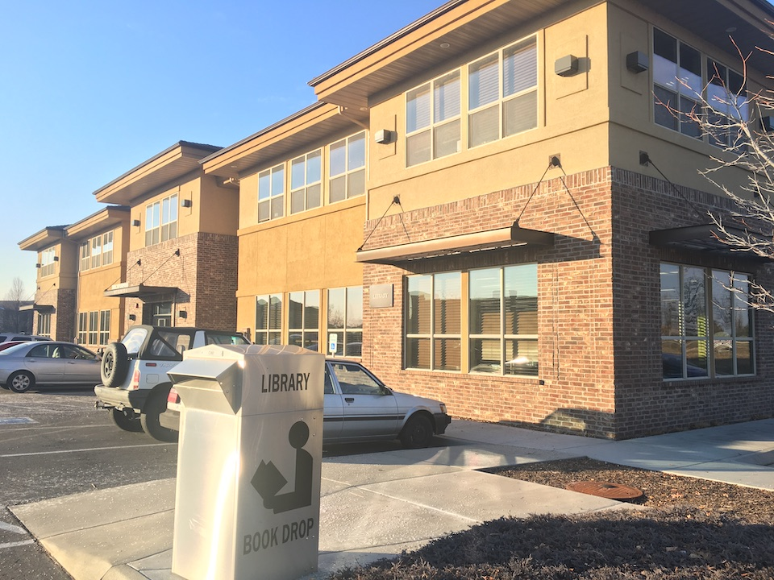

Instructional Designer
Ryan Randall
2022-03-25

If you'd like to follow along, please browse to:
https://www.ryanpatrickrandall.com/talks/itrc.html
My Goals for This Presentation
- Briefly share my background
- Present recommendations for improvements to
HO 0107: Medical Law and Ethics - 20 minutes for this presentation,
then 10 minutes for Q & A
Hello!
CWI's Instruction Coordinator & Faculty Outreach Librarian

At CWI

Inside the Library:
Instruction Coordinator

Outside the Library:
Faculty Outreach
Before CWI…
First-Year Composition & Other Courses
Writing Centers
User & Space Studies
Course Background Information
HO 0107 - 02: Medical Law and Ethics
Prerequisite for several ISU degrees
Student Perspective
- Students love the textbook and find it an easy read
- Student engagement is a struggle
Faculty Concerns
- Faculty would like to improve instructor presence
- Faculty would like to improve accessibility
- Faculty would like explore implementing Universal Design for Learning (UDL)
Recommendations
Current Strengths
- Introductions, both yours and the students
- Student-to-student forum
- Videos with captions
Recommendation One
Consider using more frequent, short videos
- Your own video introduction
- Invite students to post video introductions as well
Recommendation One: Videos
Vanderbuilt's educational video review suggests
videos be no longer than 6-9 minutes
UDL guidelines suggest multiple modes for
engaging with content and communicating student understanding
Recommendation One: Videos
Informal, shorter videos can address:
- instructor presence
- accessibility
- student engagement
Recommendation Two
Consider optional student video or multimedia responses on forum Assignments
Media exclusively? media as supplements to written elements? Your choice!
CAST has useful, short pages on using audio, images, and videos accessibly
Recommendation Two: Multimedia Options
These could address:
- UDL recommendation for multiple means of communication
- Student feelings of community belonging and engagement
Recommendation Two: Multimedia Options
- Caution: consider demonstrating how students can add captions and alt text to their media, particularly if you offer this option for forum posts
- Benefit: multimedia creation and accessibility are valuable, transferable skills
Recommendation Three
Consider a Student-Faculty Forum, similar to your existing Student-Student Forum
Recommendation Three
UDL encourages adaptive design, and the Universal Design for Learning: A Practical Guide* encourages student feedback as part of "design thinking"
* written by Takacs and Zhang of the Justice Institute of British Columbia, therefore not one of CAST's official UDL resources… but very useful!
Recommendation Three: Student-Faculty Forum
Formative student feedback could help:
- your efforts find the lowest-hanging fruit
- student engagement with material and classmates
- you learn why students love the textbook, to better draw upon what they love
- inform future iterations of the course
Recommendation Four
Consider Clarifying and Minimizing Potential Sources of Confusion
This could address:
- faculty interest in accessibility and UDL
- help students better engage with material
Recommendation Four: Clarify
Consider adding your own synthesis or highlights to materials
Referring to course performance and learning objectives is a strength!
Reducing the executive function necessary for students to make these connections takes this strength further
Recommendation Four: Clarify
UDL has excellent examples for clarifying
For example, you could list assignments in more strictly chronological sequence
Recommendation Four: Clarify
Consider Using Inline Frames for Documents
Moodle's documentation has more details on using IFrames in Moodle.
Recommendation Five
Additional "What Will You Learn" Summaries
These can help students:
- better understand in the short term
- better prepare for transfer in the long term
Recommendation Five: Summaries
You've already begun doing this!
Consider doing it more intentionally and consistently
Recommendations Summary
- Use multimedia
- Optional media responses
- Student-Faculty forum
- Clarify for engagement & executive function
- "What Will You Learn?" summaries
Revisiting Our Goals
- Share my background
- Share my recommendations
- Now, please share your questions!